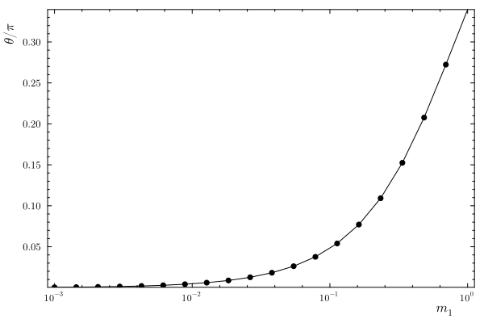
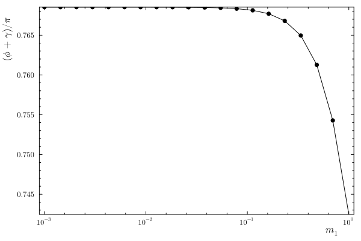

Small-mass limit of Wigner angles
PR KaiHabermann/decayangle#85 tries to treat an exactly massless final-state particle by replacing its rest frame with an auxiliary frame. That is useful for testing, but the exact massless rest frame does not exist.
Here we ask a nearby, well-defined question: keep the usual massive construction, make one final-state mass small, and watch the matching Wigner rotation.
Four-body example
Compare the paths to particle 1 for ((12)3)4 and (13)(24).
q1(m) = FourVector(0.20, -0.10, -0.50; M = m)
q2 = FourVector(0.35, 0.22, 0.28; M = 0.45)
q3 = FourVector(-0.18, 0.31, -0.12; M = 0.60)
q4 = FourVector(-0.37, -0.43, 0.34; M = 0.80)
path_123_12_1 = (
ToHelicityFrame((1, 2, 3)),
ToHelicityFrame((1, 2)),
ToHelicityFrame(1),
)
path_13_1 = (ToHelicityFrame((1, 3)), ToHelicityFrame(1));The relative transform is a rotation. Close to the massless limit the full Lorentz-factor decode becomes numerically delicate, so we read the rotation from the tracked SU(2) matrix.
masses = 10.0 .^ range(0, -3; length = 20)
scan = []
for m in masses
cmp = compare_instruction_paths(path_123_12_1, path_13_1, (q1(m), q2, q3, q4))
w = wigner_zyz(cmp.relative)
push!(scan, (m = m, θ = w.θ, phase = wrap2(w.ϕ + w.ψ)))
end
last(scan)(m = 0.001, θ = 0.001514235375798251, phase = 2.414394965957783)The non-collinear angle goes to zero:

At the limit, the Wigner rotation is a helicity phase. For a diagonal spin-rotation matrix,
\[D_{\lambda',\lambda}(\phi,\theta,\gamma) \xrightarrow[\theta\to 0]{} \delta_{\lambda',\lambda}\,\exp\!\left[-i\lambda(\phi+\gamma)\right].\]
So the useful quantity is the phase angle ϕ + γ, not the two Euler angles separately.

The limiting phase is fractional:
last(scan).phase / π0.768525786816739For this ((12)3)4 versus (13)(24) comparison it is about 0.7685π, so the matching angle is not pinned to a special integer multiple of π.
Takeaway
- An exactly massless particle has no rest frame, so the massive helicity construction cannot simply be evaluated at
m = 0. - The small-mass limit is regular in the sense that
θ → 0. - At the limit, only the little-group phase
ϕ + γis meaningful.
Possible follow-up
There is a puzzle in the simpler three-body case. For the points checked so far, the limiting phase is somewhat trivial: either 0 / 2π, or π.
This is not yet evidence for a general rule. A useful next check would be to generate phase-space points and test whether the three-body limiting phase is always one of those special values, or whether it changes point by point.